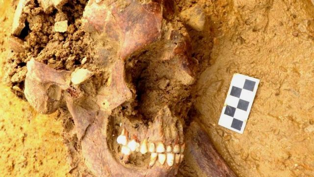
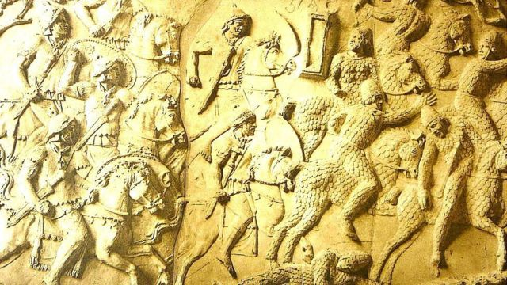
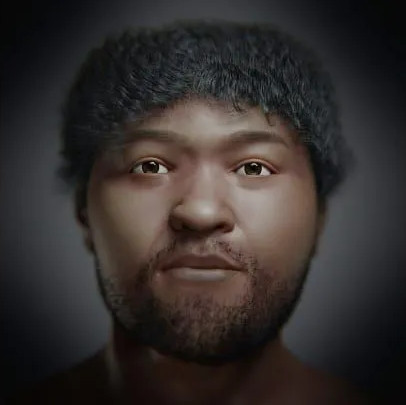

Os mistériosos ossos de 2 mil anos atrás
A descoberta
Em uma reviravolta arqueológica surpreendente, detetives de DNA traçaram os passos de um jovem Sármata, nascido há dois mil anos no sul da Rússia, até o interior da Inglaterra.
O esqueleto, apelidado de Offord Cluny 203645, foi encontrado durante escavações para melhorar uma estrada entre Cambridge e Huntingdon, revelando uma história intrigante da Grã-Bretanha romana.
O esqueleto de Offord Cluny 203645

A pesquisa, conduzida pelo Laboratório de Genômica Antiga do Instituto Francis Crick, em Londres, decodificou o DNA do jovem Sármata a partir de um minúsculo osso do ouvido interno.
Os resultados indicaram uma origem distante, na região que abrange o sul da Rússia, Armênia e Ucrânia, destacando a primeira prova biológica da presença dos Sármatas na Grã-Bretanha.
Mapa da região de onde seria Sarmácias.





Os métodos avançados de análise de DNA antigo permitiram reconstruir a jornada do jovem, desafiando a expectativa inicial de que ele fosse um habitante local.
Os dentes fossilizados, analisados pela equipe de arqueólogos da Universidade de Durham, revelaram mudanças na dieta ao longo do tempo, sugerindo uma migração gradual para oeste.
Fóssil do Offord Cluny 203645.
Os dentes se desenvolvem ao longo do tempo, por isso, tal como os anéis das árvores, cada camada registra uma "retrato" dos produtos químicos que os rodeavam naquele momento.
A análise mostrou que até os 6 anos ele comia milho e grãos de sorgo, conhecidos cientificamente como culturas C4, que são abundantes na região onde se sabe que os sármatas viveram.
No entanto, com o tempo, a análise mostrou uma diminuição gradual no consumo desses grãos e de mais trigo, encontrado na Europa Ocidental, de acordo com a professora Janet Montgomery, da Universidade de Durham.
"A análise nos diz que ele, e não os seus antepassados, fez a viagem para a Grã-Bretanha. À medida que cresceu, migrou para oeste, e estas plantas desapareceram de sua dieta", disse ela.
Registro Histórico
Os registros históricos indicam que Offord pode ter sido filho de um cavaleiro ou mesmo seu escravo, com evidências de uma unidade da cavalaria Sármata incorporada ao Exército romano enviada à Grã-Bretanha na época em que ele viveu.
Registro dos Sármatas
Alex Smith, da MOLA Headland Infrastructure, empresa líder na escavação, enfatizou o impacto dessas descobertas, afirmando que as técnicas de análise química e de DNA estão transformando nossa compreensão não apenas das cidades, mas também das sociedades rurais durante o período romano.
O líder do Laboratório de Genômica Antiga, Pontus Skoglund, destacou a significância da nova tecnologia, afirmando que o DNA antigo está revolucionando a compreensão dos períodos romano e pré-romano. Essa descoberta reforça a ideia de um movimento mais amplo e dinâmico na sociedade romana, proporcionando uma visão única da mobilidade humana na antiguidade.
Ler Mais
O Rosto do Passado
Brasileiros fazem reconstrução facial de egípcio que viveu há 35 mil anos.
Ler Mais
O Elo Genético
Pesquisadores analisaram dna de até 40 mil anos para retraçar o elo entre as duas espécies
Ler Mais
A escultura de ossos de Mamute
Arqueólogos descobriram uma escultura feita há 25 mil anos com ossos de mamute.
Ler Mais